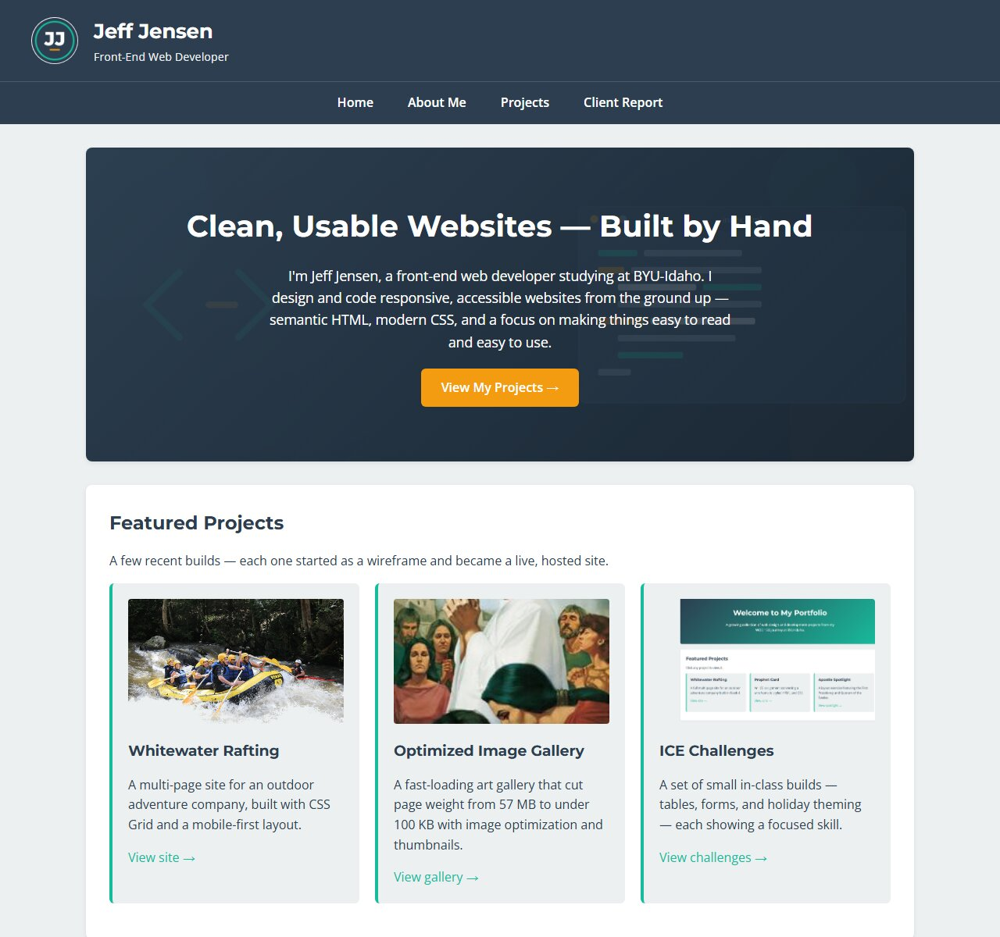
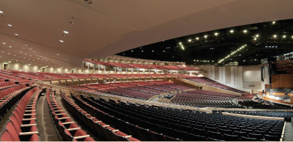

Projects
A closer look at the sites and exercises I've built during the WDD program. Each entry links to the live, hosted version so you can click through and try it.
Featured Builds
-

Whitewater Rafting
A multi-page site for a fictional outdoor-adventure company, demonstrating multi-page layout, CSS Grid, and responsive design.
View site → -
Optimized Image Gallery
A performance case study: reducing a 57 MB gallery to under 100 KB with JPG optimization and separate thumbnails.
View gallery → -

WDD 130 Portal
A hub page linking all my coursework, built with a reusable stylesheet and CSS design tokens.
View portal → -

ICE Challenges
A collection of small in-class builds — data tables, styled forms, holiday theming, and image optimization — each focused on one skill.
View all challenges →
Project Summary
| Project | Focus | Status |
|---|---|---|
| Whitewater Rafting | Multi-page layout & Grid | Live |
| Optimized Image Gallery | Performance & images | Live |
| WDD 130 Portal | Design system & reuse | Live |
| ICE Challenges | Focused HTML/CSS skills | Live |
Keep Exploring
Want to know more about the developer behind these builds? Visit my About Me page, or return Home.